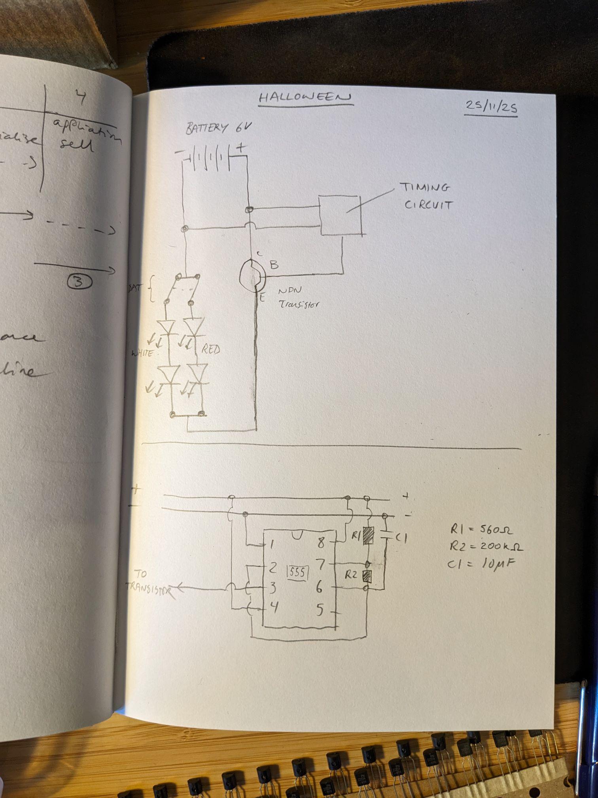
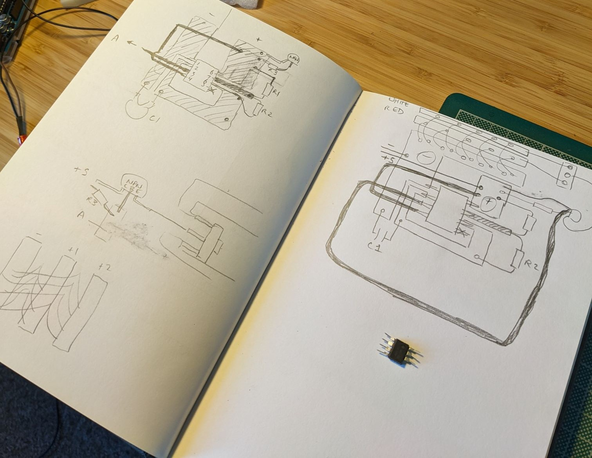

Welcome to hell; please drive safely
26th October 2025A while back we watched a video on the topic of British road crossings (which I strongly recommend, as well as Chris's shorter video specifically about Zebra crossings) and since then Tess has been calling out the different crossings by their proper animal names. This explains why, with tickets to a Halloween event with costumes mandatory, she proposed we dress as zebra crossings. Belisha beacons, to be exact. And thus, on the day of said event, we scrambled to make said costumes.
Belisha beacons are a British street-furniture design icon, yet despite their partner the Zebra crossing, aren’t well-known by name. What’s a Belisha Beacon? It’s a flashy yellow sphere on the top of a black-and-white stripey pole. Oooh, you say. I didn’t know they were called that. Why are they called that? Well, the Minister of Transport in the 1930s (Mr Leslie Hore Belisha) was nearly hit by a car while crossing the road.
There was a set of spare Charles Endirect Belisha beacons sat in the warehouse at EGG Lighting for years until we donated them to the Glasgow Circular Arts Network, so I was quite familiar with them not just as street furniture but as a luminaire. It turns out that the mandatory flash rate for Belisha beacons is 750ms, which I can tell you because it says so in BS 8442:2022+A1:2023:
The light of a pedestrian crossing globe shall flash with the following characteristics:
a) a flashing rate of (40±4) flashes per minute; and
b) a light-on period of between 50% and 60% of total cycle time
The point to make here is that road safety and driving culture in the UK has been shaped from the earliest stages by political decisions and design/engineering interventions. The UK has pioneered a number of design responses which we consider ubiquitous today, such as the red-amber-green traffic light, the Pelican crossing (1969 - pedestrian light controlled) and the Toucan crossing (a cyclist's favourite - "Two Can" cross). Technology continues to be a relevant factor in the pedestrian experience, with Pelican crossings phased out in 2016 in favour of Puffin crossings which use sensors to track pedestrians both on the kerb and in the crossing, aiming to hold lights while pedestrians are still crossing and to avoid halting traffic if there are no pedestrians on the kerb. I assume these are based on infrared sensors but with some extra processing.
So: the design specification. Flashing yellow sphere or ‘halo’ around our heads. Black-and-white stripey pole. Zebra crossing ‘rug’. We did not aim to comply with the requirements of BS 8442, however the ingress protection requirements would be quite practical in the case of spilled drinks. We’d discussed the basic design in the week and Tess had made one cardboard neck collar which we reckoned would hold up a beacon halo. We had some old storage boxes with diffuse plastic inner structure and black/white fabric outers; perfect for both the beacon and for the stripey elements. Ten hours.
It's just a blinking yellow light
Well, I was stubborn and didn’t want to buy some fairy lights or similar. I wanted to do the build and didn’t want the hassle and risk of delayed postage or not-quite-right design.
Flashing some LEDs at about 1Hz is no trouble with a microcontroller (Delay(1000);) but as I’d recently been using 555 timing ICs I figured I could avoid the Arduino and make a small circuit for each costume. An AA battery pack would feed 5V to the circuit, comprising of a 555-based timing circuit which would switch a transistor (avoiding too much current and heating of the 555) to power a string of LEDs. I added a DPDT microswitch to toggle between a string of yellow LEDs (i.e. white LEDs painted with yellow Posca marker) and a string of red LEDs. Yellow, the colour of safe road crossings. Red, the colour of Hell. Makes sense.
{kind=link}
I got this up and running on the breadboard fairly quickly, after a bit of faff finding resistor and capacitor values which would combine to give a 1Hz period.
{kind=link}
Now, an issue. This is a simple circuit but still involves quite a few connections, and this doesn’t even include connections for all the LED strings and colour-select microswitch. I was pretty sure a freeform circuit would become unmanageable but I didn’t have any stripboard for making a PCB. Well, we did have some copper sheet leftover from Architectural model-making while Tess was at Uni…might work.
{kind=link}
At roughly 0.1mm thick, this would be equal to a PCB with approx 27oz (per foot squared) weight. So let's conclude that this should be "adequate" to carry tiny current I'm drawing.
So, I sketched a quick PCB design, working more with blocks rather than traces and trying to keep each block as geometrically simple as possible. The 555 pins are pretty close together so I decided to use a few wires with heatshrink to take out the complexity of the PCB (a bit like the reverse panel on a 2-layer PCB).
{kind=link}
I drew out the cut lines on the copper to keep the two ‘PCBs’ roughly the same. While I had images of cutting with a craft knife, cutting out the copper with scissors was actually really easy.
{kind=link}
{kind=link}
There was a bit of trial and error here. I could have flattened it a bit more to help the pieces sit flat. I also decided to punch holes with a nail and hammer which I figured would allow a sort of through-hold soldering, but it turned out this wasn’t necessary. Step one was melting the cutting mat I had the copper sitting on, but an old wooden chopping board worked nicely. Once I got the hang of it, the copper soldered really well. The trick is to heat the plate and apply solder in a puddle, then dip the wire/pin into the puddle, then agitate slightly and remove the iron.
{kind=link}
{kind=link}
{kind=link}
My setup was tested to the limit here. An open window is a poor substitute for an activated carbon filter, a socket clamped in an adjustable spanner is a poor substitute for a soldering iron rest and perhaps most of all, a gas hob is a poor and dangerous substitute for a hot air gun. Ok, I did switch to using heat from the iron but it’s just not that great.
{kind=link}
That looks… improvised
I had visions of poignant engineering art, handcrafted living sculpture in copper, the flow of electrons guided by my will and… well yeah in reality it looked pretty rough and ready. Tess's verdict "that looks... improvised". Well that's true, but look, the LED sure did blink and time is really getting on. Time to make PCB #2.

{kind=link}
This is a sort of turning point in the day for me where fumes and extended focus started to chip away. The final step of an otherwise neatly-made free-form copper PCB was soldering the battery pack leads. Done, nice.
Unfortunately, I killed the 555 with the wrong polarity voltage, which necessitated cutting it out and re-soldering a replacement in a much more fiddly way. Smart response: could have put a polarity protection diode on, eh? Or double-checked before flicking the switch?
So, two PCBs done but far from suitable for wearing in a club. I needed to glue the traces to a substrate and encapsulate. Really dreaming of that stripboard about now – probably time to just buy some for the next project in advance? I didn’t have patience for UHU to set and we’d run out of hot-glue, so the ‘solution’ was super-glue to plastic sheet and mummification in black electrical tape. Done!
{kind=link}
{kind=link}
{kind=link}
The next sting was that in my super-glue-xuberance I must have jammed one of the microswitches, somehow electrically disconnected from both throw states. De-solder, re-solder replacement. Working.
{kind=link}
A Beacon of hope: final assembly
Tess having finished the collars, poles and zebra crossing (you know, the actual costumes), we worked together on making the Belisha beacon headgear. These consisted of a front and back horseshoe of translucent plastic segments, electrical-taped together, with a cardboard inner edge and a PVC tube for the outer edge, which we hoped would allow some light out the edges.
{kind=link}
{kind=link}
Into the void was hastily jammed a string of LEDs (in parallel loops of 2 in series, a nice balance of forward voltage and brightness without adding resistors). At this point, feeling exhausted, under pressure to get something working and basically wanting to leave (and annoyed at myself for laboriously soldering up a loom of red and yellow LEDs but connecting every second LED backwords, rendering the whole thing useless), it was time to compromise.
I dropped the second string of red LEDs, dropped the number of LEDs per headgear from 6 to 4 and connected them with pin-wires rather than soldering cut-to-length wires. No photos exist of this phase - time did not permit such luxuries as self reflection. But here we are; project done. Welcome to hell; please drive safely.
Oh, this isn’t a costume for wearing, this is a project
At first we were both a bit disappointed with the outcome and both heatsets went straight into a shopping bag. The real-life zebra crossing on the way mocked us a bit – its light so bright and uniform, its pole so distinct. Our work wasn’t neat and I’d had to cut back on the red light trick, but we had pulled off a cool concept in one mad sprint and with almost no purchased materials (just LEDs and black fabric from the charity shop).
{kind=link}
{kind=link}
{kind=link}
The headsets held up really well and made it easy to find each other in the club, something that really stresses me out normally. I’d say the concept was unique and I’m glad we did it; our friends thought it was hilarious and I think it’s cool to step outside the Halloween canon. That said, are zebra crossings Halloween themed? Well, it depends on your attitude to road safety…
In terms of the project, we were both forced to solve immediate problems in creative ways. I don’t think I’ll rush to use my cut-copper freeform PCB technique again, but I’m glad I did it.
Maybe next year we'll start before the day-of...